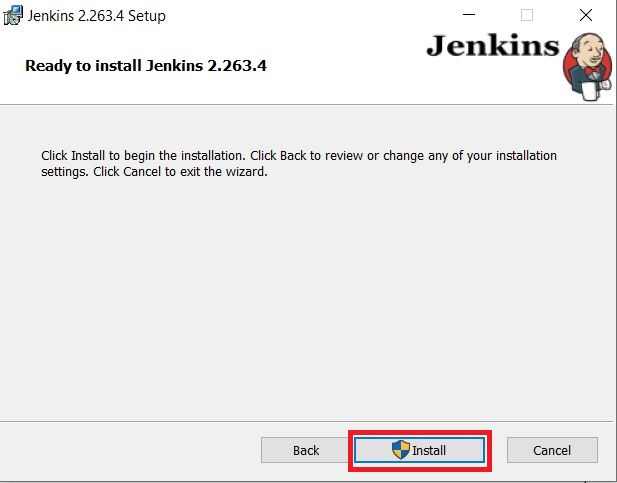
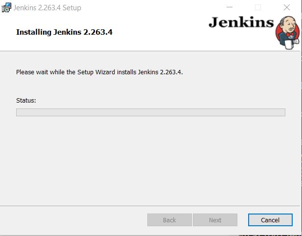

Windows
|
This site is the new docs site currently being tested. For the actual docs in use please go to https://www.jenkins.io/doc. |
The simplest way to install Jenkins on Windows is to use the Jenkins Windows installer. That program will install Jenkins as a service using a 64 bit JVM chosen by the user. Keep in mind that to run Jenkins as a service, the account that runs Jenkins must have permission to login as a service.
include::partial$_installation_requirements.adoc
Installation steps using Windows MSI installer
Refer to the Windows section of the Downloading Jenkins page to download either an LTS release or a weekly release of the Windows installer. After the download completes, open the Windows installer and follow the steps below to install Jenkins.
- Step 1: Setup wizard
-
On opening the Windows Installer, an Installation Setup Wizard appears, Click Next on the Setup Wizard to start your installation.
- Step 2: Select destination folder
-
Select the destination folder to store your Jenkins Installation and click Next to continue.
- Step 3: Service logon credentials
-
When Installing Jenkins, it is recommended to install and run Jenkins as an independent windows service using a local or domain user as it is much safer than running Jenkins using LocalSystem(Windows equivalent of root) which will grant Jenkins full access to your machine and services.
To run Jenkins service using a local or domain user, specify the domain user name and password with which you want to run Jenkins, click on Test Credentials to test your domain credentials and click on Next.

| If you get Invalid Logon Error pop-up while trying to test your credentials, follow the steps explained here to resolve it. |
- Step 4: Port selection
-
Specify the port on which Jenkins will be running, Test Port button to validate whether the specified port if free on your machine or not. Consequently, if the port is free, it will show a green tick mark as shown below, then click on Next.

- Step 5: Select Java home directory
-
The installation process checks for Java on your machine and prefills the dialog with the Java home directory. If the needed Java version is not installed on your machine, you will be prompted to install it.
Once your Java home directory has been selected, click on Next to continue.

- Step 6: Custom setup
-
Select other services that need to be installed with Jenkins and click on Next.

- Step 7: Install Jenkins
-
Click on the Install button to start the installation of Jenkins.

Additionally, clicking on the Install button will show the progress bar of installation, as shown below:

- Step 8: Finish Jenkins installation
-
Once the installation completes, click on Finish to complete the installation.
Jenkins will be installed as a Windows Service. You can validate this by browsing the services section, as shown below:

| See the upgrade steps when you upgrade to a new release. |
Silent Install with the MSI installers
MSI installers can be installed via a silent method, which can show basic UI (/qb) or no UI at all (/qn). The silent method does not prompt for user input so there are properties that you can pass to the installer to set the specific values. A very basic command line is shown below for a silent install.
msiexec.exe /i "path\to\jenkins.msi" /qn /norestart-
Installation directory
-
Service account username/password
-
Java installation directory
-
The port for Jenkins to listen on
Each of these things can be overridden by passing a NAME=VALUE property pair for what you want to override:
| Property Name | Description |
|---|---|
INSTALLDIR |
Path to the directory to install Jenkins. (Default: C:\Program Files\Jenkins) |
PORT |
The port Jenkins will listen on. (Default: 8080) |
JAVA_HOME |
The directory where java.exe can be found. (Default: The latest recommended Java runtime found in the registry) |
SERVICE_USERNAME |
The username that the service should run as. The account must have LogonAsService permissions. (Default: In silent mode, the LOCALSYSTEM account) |
SERVICE_PASSWORD |
The password for the SERVICE_USERNAME account. This should only be provided if SERVICE_USERNAME is provided. (Default: In silent mode, none for LOCALSYSTEM) |
A more complex example, including the creation of a log file for the installation process is shown below:
msiexec.exe /i "path\to\jenkins.msi" /qn /norestart INSTALLDIR="D:\Jenkins" JAVA_HOME="C:\Program Files\SomeJava" PORT=80 /L*v "path\to\logfile.txt"This would install Jenkins into D:\Jenkins, use the Java runtime from C:\Program Files\SomeJava and Jenkins would be listening on port 80.
Post-installation setup wizard
After downloading, installing and running Jenkins, the post-installation setup wizard begins.
This setup wizard takes you through a few quick "one-off" steps to unlock Jenkins, customize it with plugins and create the first administrator user through which you can continue accessing Jenkins.
Unlocking Jenkins
When you first access a new Jenkins instance, you are asked to unlock it using an automatically-generated password.
- Step 1
-
Browse to
http://localhost:8080(or whichever port you configured for Jenkins when installing it) and wait until the Unlock Jenkins page appears.
- Step 2
-
The initial Administrator password should be found under the Jenkins installation path (set at Step 2 in Jenkins Installation).
For default installation location to C:\Program Files\Jenkins, a file called initialAdminPassword can be found under C:\Program Files\Jenkins\secrets.
However, If a custom path for Jenkins installation was selected, then you should check that location for initialAdminPassword file.
- Step 3
-
Open the highlighted file and copy the content of the initialAdminPassword file.
- Step 4
-
On the Unlock Jenkins page, paste this password into the Administrator password field and click Continue.
Notes:-
You can also access Jenkins logs in the jenkins.err.log file in your Jenkins directory specified during the installation.
-
The Jenkins log file is another location (in the Jenkins home directory) where the initial password can also be obtained.

-
This password must be entered in the setup wizard on new Jenkins installations before you can access Jenkins’s main UI. This password also serves as the default administrator account’s password (with username "admin") if you happen to skip the subsequent user-creation step in the setup wizard.
Customizing Jenkins with plugins
After unlocking Jenkins, the Customize Jenkins page appears. Here you can install any number of useful plugins as part of your initial setup.
Click one of the two options shown:
-
Install suggested plugins - to install the recommended set of plugins, which are based on most common use cases.
-
Select plugins to install - to choose which set of plugins to initially install. When you first access the plugin selection page, the suggested plugins are selected by default.
| If you are not sure what plugins you need, choose Install suggested plugins. You can install (or remove) additional Jenkins plugins at a later point in time via the Manage Jenkins > Plugins page in Jenkins. |
The setup wizard shows the progression of Jenkins being configured and your chosen set of Jenkins plugins being installed. This process may take a few minutes.
Creating the first administrator user
Finally, after customizing Jenkins with plugins, Jenkins asks you to create your first administrator user.
-
When the Create First Admin User page appears, specify the details for your administrator user in the respective fields and click Save and Finish.
-
When the Jenkins is ready page appears, click Start using Jenkins.
Notes:-
This page may indicate Jenkins is almost ready! instead and if so, click Restart.
-
If the page does not automatically refresh after a minute, use your web browser to refresh the page manually.
-
-
If required, log in to Jenkins with the credentials of the user you just created and you are ready to start using Jenkins!
Troubleshooting Windows installation
Invalid service logon credentials

When installing a service to run under a domain user account, the account must have the right to logon as a service. This logon permission applies strictly to the local computer and must be granted in the Local Security Policy.
Perform the following steps below to edit the Local Security Policy of the computer you want to define the ‘logon as a service’ permission:
-
Logon to the computer with administrative privileges.
-
Open the Administrative Tools and open the Local Security Policy
-
If the Local Security Policy is missing in your system, refer to the answer in the Where to download GPEdit.msc for Windows 10 Home? question on Microsoft Community to troubleshoot
-
Expand Local Policy and click on User Rights Assignment
-
In the right pane, right-click Log on as a service and select properties.
-
Click on the Add User or Group… button to add the new user.
-
In the Select Users or Groups dialogue, find the user you wish to enter and click OK
-
Click OK in the Log on as a service Properties to save changes.
After completing the steps above, try logging in again with the added user.